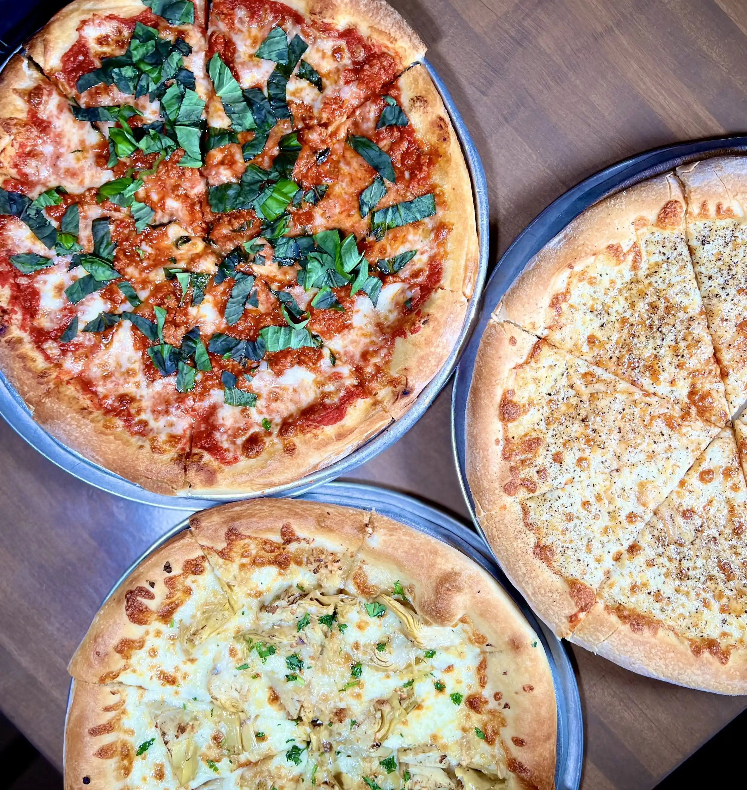
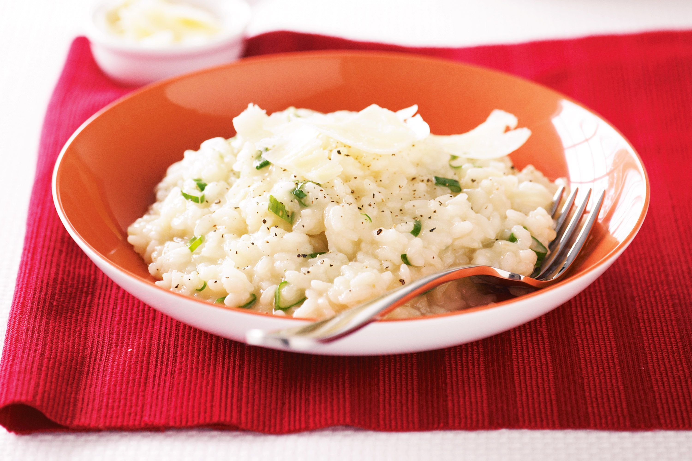
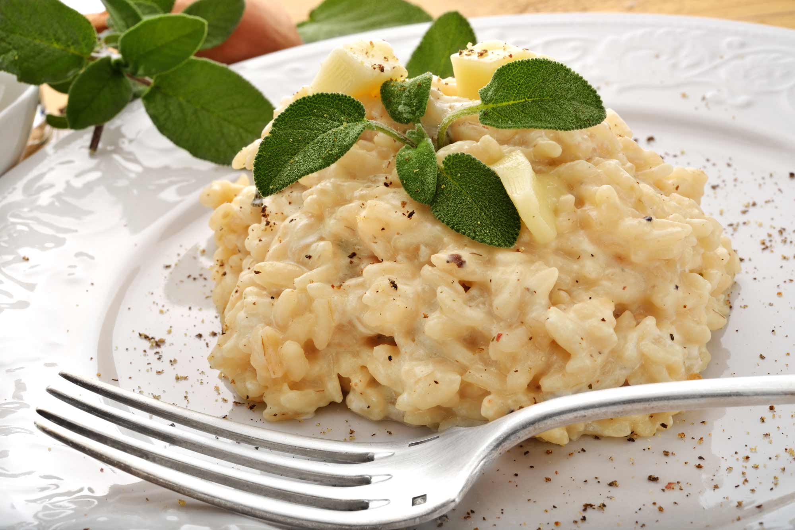

Foods to try in ITALY



Pizza
In Italy, pizza is fresh, simple, and of a decent size, making each ingredient stand out on its own. There are two types of Italian pizza: Neapolitan pizza “pizza Napoletana”, which is thicker and smaller, also known as Naples-style pizza, and Roman pizza “pizza Romana”, which originates from Rome and is thinner, crispier, and larger.


Lasagna
A meal made up of layers of pasta, meat, cheese, and tomato sauce is as close as it can get to culinary perfection. There’s also a vegetarian version where meat is substituted with vegetables, that way everyone has the chance to try the amazing Italian dish. Lasagna is from the Naples region and it was originally cooked with bechamel sauce, ragu, and cheese, but over the years, with more international ingredients available, lasagna transformed into what we know today.

